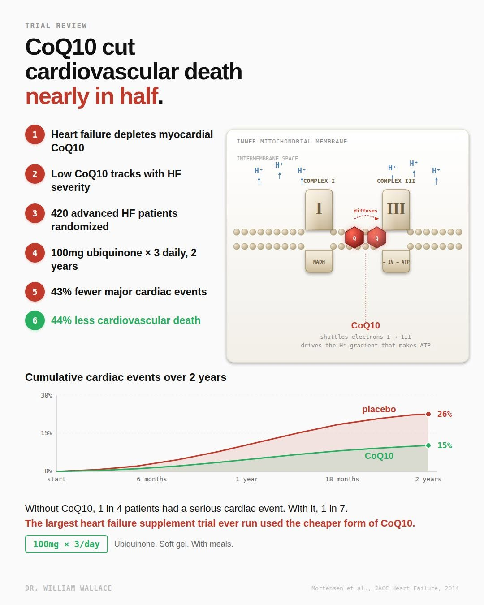

Q-SYMBIO: CoQ10 cut cardiovascular death in heart failure patients
A shared summary of the Q-SYMBIO RCT (JACC: Heart Failure, 2014; 420 patients with moderate to severe heart failure given 100 mg ubiquinone three times daily for two years vs placebo). Louis states it cut cardiovascular death roughly in half and calls CoQ10 the best-supported supplement for this purpose in heart failure.